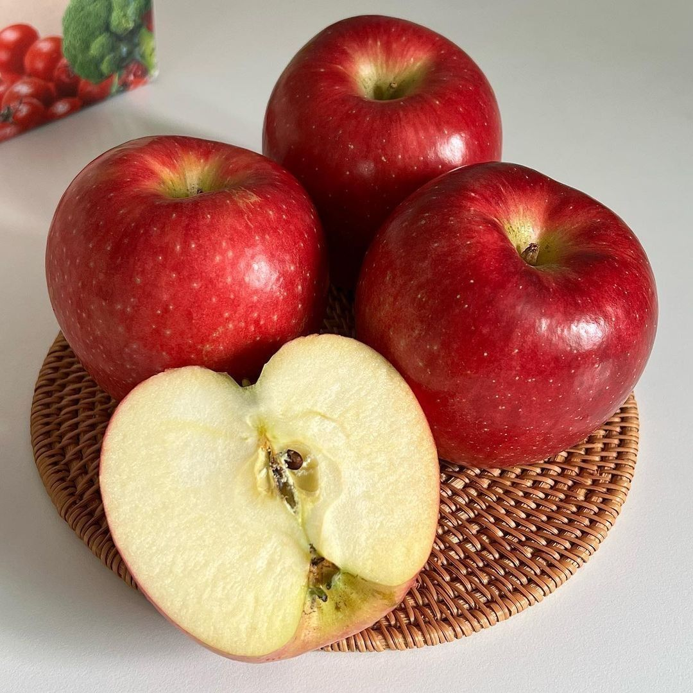
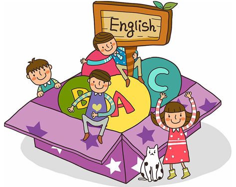
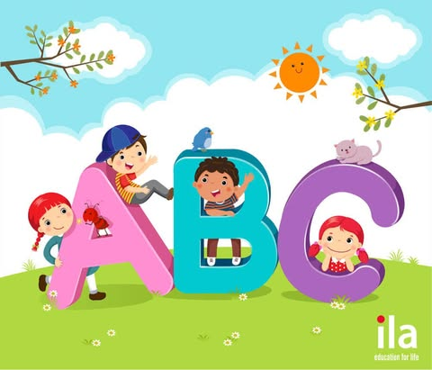

📚 Vocabulary by Topics
🐾 Animals
Cat
Lion
🎨 Colors

Red

Blue
🍎 Food

Apple
Banana
Các ba mẹ có biết không? Cách hiệu quả nhất để giúp bé chinh phục một ngôn ngữ thứ hai chính là học theo phương pháp Tự nhiên! Hãy nhớ lại cách mà ba mẹ đã dạy bé nói tiếng Việt: thông qua những tình huống giao tiếp hằng ngày, ba mẹ nói – bé nghe – rồi bé bắt chước và dần dần hình thành khả năng ngôn ngữ một cách rất tự nhiên, không cần giáo trình bài bản hay cấu trúc ngữ pháp phức tạp nào cả. Cũng tương tự như vậy, tiếng Anh hay bất kỳ ngôn ngữ nào khác đều trở nên dễ dàng hơn rất nhiều khi bé được tiếp cận qua những hoạt động quen thuộc và gần gũi. Chỉ cần ba mẹ tạo cho bé môi trường giao tiếp, tình huống thực tế và cho bé luyện tập thường xuyên, thì bé sẽ tiến bộ nhanh chóng và hình thành phản xạ tiếng Anh một cách tự nhiên nhất.
Phát triển tương lai ngay từ hôm nay
Học tiếng Anh từ sớm giúp trẻ phát triển não bộ một cách linh hoạt và toàn diện hơn. Khi tiếp xúc với hai ngôn ngữ, trẻ có khả năng ghi nhớ tốt hơn, phản xạ nhanh hơn và tăng cường sự tập trung. Việc chuyển đổi giữa các ngôn ngữ còn giúp rèn luyện tư duy logic, khả năng phân tích và giải quyết vấn đề. Đặc biệt, trẻ nhỏ có khả năng bắt chước âm thanh rất tốt nên dễ phát âm chuẩn và hình thành phản xạ giao tiếp tự nhiên ngay từ đầu.
Việc sử dụng được tiếng Anh giúp trẻ tự tin hơn trong giao tiếp và thể hiện bản thân. Trẻ có thể giới thiệu bản thân, trò chuyện và kết bạn với bạn bè quốc tế, từ đó mở rộng mối quan hệ và tầm nhìn. Khi được rèn luyện nghe – nói thường xuyên, trẻ sẽ hình thành phản xạ tự nhiên và không còn e ngại khi sử dụng ngoại ngữ. Sự tự tin này không chỉ giúp trẻ học tốt tiếng Anh mà còn tích cực hơn trong các hoạt động học tập và xã hội.
Tiếng Anh là môn học quan trọng và xuất hiện xuyên suốt trong chương trình giáo dục. Khi có nền tảng vững chắc từ nhỏ, trẻ sẽ không bị mất gốc và dễ dàng tiếp thu kiến thức ở các cấp học cao hơn. Ngoài ra, tiếng Anh còn giúp trẻ tiếp cận nguồn tài liệu phong phú từ sách, video và các nền tảng học tập quốc tế, hỗ trợ tốt cho các môn học khác như khoa học, công nghệ và kỹ năng mềm. Đây chính là bước đệm quan trọng cho hành trình học tập lâu dài của trẻ.
Tiếng Anh là ngôn ngữ toàn cầu, được sử dụng rộng rãi trong giáo dục, kinh doanh, công nghệ và nhiều lĩnh vực khác. Việc thành thạo tiếng Anh từ nhỏ sẽ tạo lợi thế lớn cho trẻ trong tương lai, từ việc tham gia các chương trình quốc tế, săn học bổng cho đến cơ hội nghề nghiệp hấp dẫn. Trong thời đại hội nhập, khả năng sử dụng tiếng Anh tốt chính là chìa khóa giúp trẻ tự tin bước ra thế giới và nắm bắt nhiều cơ hội phát triển.
Chúng tôi áp dụng phương pháp “học mà chơi – chơi mà học”, kết hợp hình ảnh sinh động, âm thanh chuẩn và các trò chơi tương tác hấp dẫn. Điều này giúp trẻ tiếp thu kiến thức một cách nhẹ nhàng, không áp lực nhưng vẫn hiệu quả. Các bài tập thực hành được thiết kế đa dạng nhằm củng cố kiến thức và giúp trẻ ghi nhớ lâu hơn. Khi việc học trở nên thú vị, trẻ sẽ chủ động và yêu thích tiếng Anh hơn mỗi ngày.
Website của chúng tôi được xây dựng với lộ trình học rõ ràng, phù hợp theo từng độ tuổi và trình độ của trẻ. Nội dung được thiết kế khoa học, đảm bảo phát triển đầy đủ bốn kỹ năng nghe – nói – đọc – viết. Mỗi bài học đều được chia nhỏ, dễ hiểu và có tính liên kết, giúp trẻ tiếp thu kiến thức một cách tự nhiên và có hệ thống. Nhờ đó, trẻ không chỉ học tốt mà còn duy trì được sự hứng thú lâu dài.
Website giúp trẻ học mọi lúc, mọi nơi chỉ với thiết bị có kết nối internet, tiết kiệm thời gian và chi phí cho gia đình. Phụ huynh có thể dễ dàng theo dõi tiến độ học tập của con thông qua hệ thống báo cáo rõ ràng và minh bạch. Sự linh hoạt này không chỉ phù hợp với nhịp sống hiện đại mà còn giúp trẻ hình thành thói quen tự học và tính kỷ luật ngay từ nhỏ.
Cat
Lion
Red
Blue
Apple
Banana